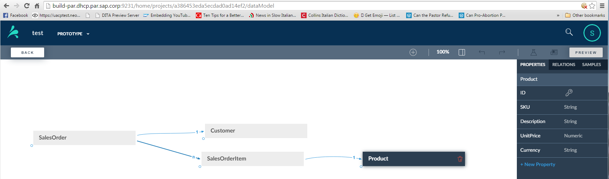

Example: Manually Adding an Object to a Data Model
You have generated a data model from an Excel file and now you want to add an object manually.
Prerequisites
You have created a data model. This is your canvas before you add the object.

Procedure
- Place your cursor in the blue circle at the corner of the Product
object and drag a line to the Supplier object, which
creates a connection from Product to Supplier.

- Under the Info tab, change the cardinality from n
to 1.

You have set the relationship to a one to many, 1 - n relationship.